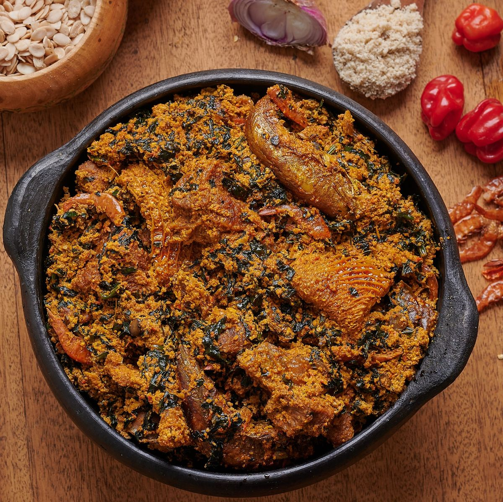

Egusi Soup is a hearty and flavourful Nigerian classic made from ground melon seeds cooked in a rich palm oil base. Packed with assorted meat, stockfish, and leafy greens, this thick and satisfying soup is best enjoyed with pounded yam, eba, or fufu. It is a dish that truly represents the warmth and richness of Nigerian cuisine.